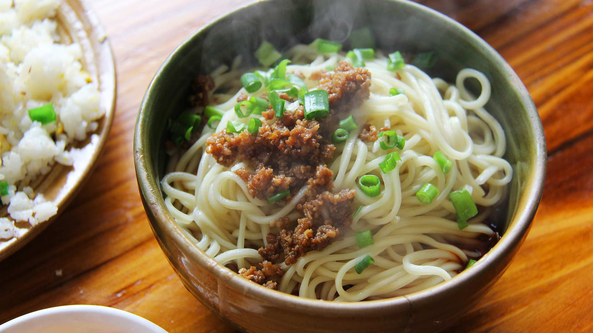

Go back
Dan Dan Mian

Image by
Sharon Ang
Dan Dan Mian is a popular spicy noodle dish from the Sichuan province of
China. It typically consists of noodles served in a spicy sauce made with
ground pork, Sichuan peppercorn, and Sichuan spicy bean sauce
(doubanjiang).
Ingredients
- 8 oz Chinese wheat noodles or spaghetti
- 1/2 lb ground pork
- 2 tablespoons vegetable oil
- 2 cloves garlic, minced
- 1 tablespoon ginger, minced
- 2 tablespoons Sichuan spicy bean sauce (doubanjiang)
- 1 tablespoon Sichuan peppercorn powder
- 1 tablespoon sesame oil
- 1 tablespoon light soy sauce
- 1 tablespoon Chinese black vinegar
- 2 cups chicken broth
- 2 green onions, chopped
- 2 tablespoons roasted peanuts, chopped (optional)
Instructions
-
Cook the noodles in a large pot of boiling water until al dente,
according to the package instructions. Drain and set aside.
-
Heat the vegetable oil in a wok or large skillet over high heat. Add the
ground pork and stir-fry for 2-3 minutes or until browned and cooked
through.
-
Add the garlic and ginger to the skillet and stir-fry for 1 minute or
until fragrant.
-
Add the Sichuan spicy bean sauce, Sichuan peppercorn powder, sesame oil,
light soy sauce, and black vinegar to the skillet and stir-fry for 1-2
minutes or until the sauce is well combined and fragrant.
-
Add the chicken broth to the skillet and bring to a simmer. Reduce the
heat to low and simmer for 5-10 minutes or until the sauce has thickened
slightly.
-
Divide the noodles among serving bowls and ladle the sauce over the top.
-
Garnish each bowl with chopped green onions and chopped roasted peanuts,
if desired.
- Serve hot and enjoy!
Go back